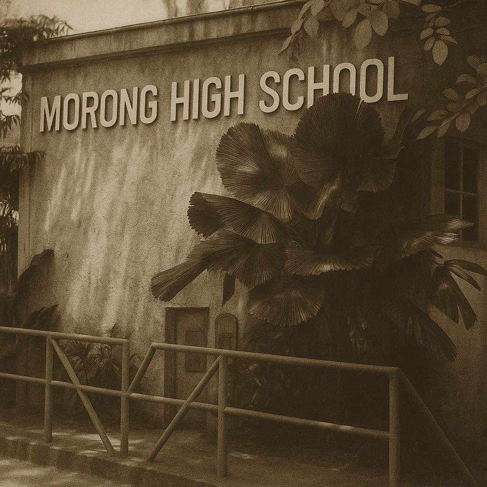

Founding of Morong High School
Morong High School is established during the final years of World War II, providing young Filipinos in Rizal province with access to quality secondary education. Despite the challenges of the era, the school quickly became a vital institution for academic growth in the community.